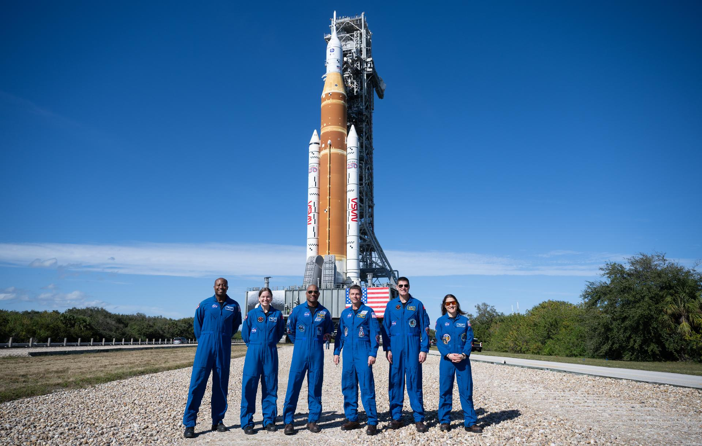
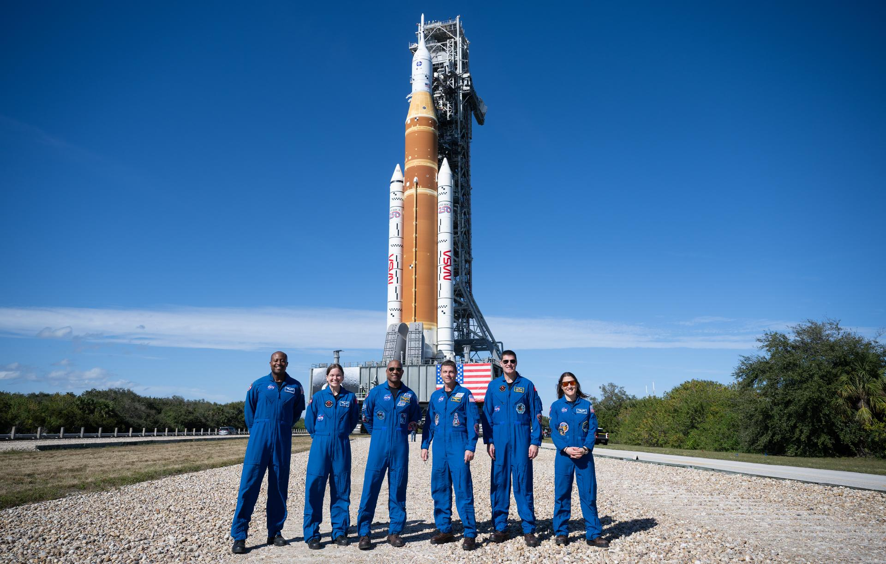

The first crewed Artemis flight marks a key step toward long‑term return to the Moon and future missions to Mars. Artemis 2 will be the first mission to carry humans toward the moon since NASA's Apollo program ended in 1972. It builds on the success of the uncrewed Artemis I in 2022, and will demonstrate a broad range of capabilities needed on deep space missions. The Artemis II test flight will be NASA’s first mission with crew aboard the SLS Space Launch System) rocket and Orion spacecraft. It will be a flyby not a landing. NASA has identified several potential launch dates, with the earliest currently targeted for March 2026 and additional opportunities stretching into April. Specific dates include March 6–9 and March 11, with backup opportunities on April 1, April 3-6, and April 30. NASA Artemis mission information
 

Four astronauts have been selected for NASA’s Artemis II mission: Commander Reid Wiseman (NASA), pilot Victor Glover (NASA), mission specialist Christina Koch (NASA), and mission specialist Jeremy Hansen (Canadian Space Agency).
| Position | Astronaut |
|---|---|
| Commander | Reid Wiseman NASA Second spaceflight |
| Pilot | Victor Glover NASA Second spaceflight |
| Mission Specialist 1 | Christina Koch NASA Second spaceflight |
| Mission Specialist 2 | Jeremy Hansen CSA First spaceflight |
Artemis II is a test flight, meaning that its primary objective is to demonstrate key systems that would be needed for a crewed mission to land on the Moon. These systems include the Space Launch System (SLS) rocket, the Orion capsule, deep-space life support and environmental controls, the crew capsules’s heat shield, and communications capabilities, among others. More information
The mission is expected to take about 10 days to complete, including these key milestones:
Although humans have been to the Moon before, the total time we’ve spent there is only about 12 days. In such a short time, we have accomplished just a small fraction of the science that awaits us there. Although robotic missions have explored the Moon since the Apollo era, it’s still worth sending astronauts back. Humans can do science more quickly, flexibly, and intuitively than robots alone, especially when exploring complex terrain and selecting meaningful samples. The Moon also serves as a testing ground for technologies and skills that are needed for future deep-space missions, including eventual human trips to Mars.